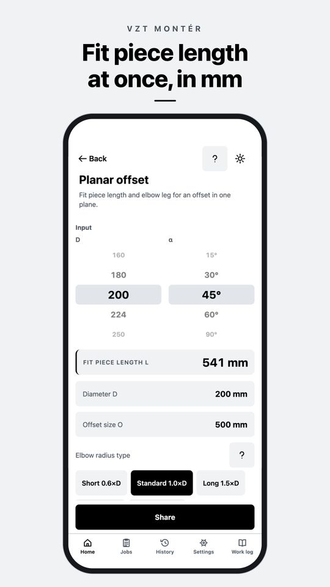
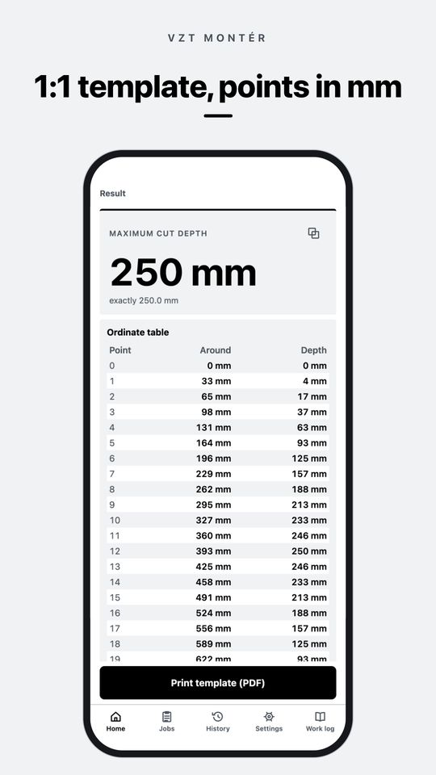
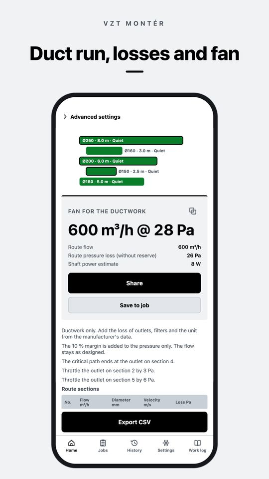
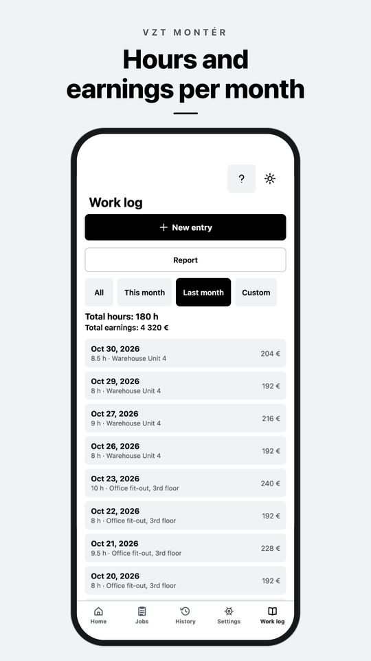

App for iPhone and Android
Duct offsets, elbow patterns and airflow, worked out on site
VZT Montér is a calculator for ductwork installers. Put in what you measured with the tape and get the fit piece length, a 1:1 sheet metal template or the pressure loss of a duct run. Works offline, no account.
Free to download. PRO is a one-time purchase, no subscription.

Ductwork calculators online
Four calculations from the VZT Montér app, free in your browser and using the same formulas as the app. Sizes in millimetres, airflow in m³/h.
What VZT Montér does
Everything runs on the phone, offline and without an account. Save calculations to the history or to a job.
Offsets Free PRO
Planar offsets on spiral duct and rectangular duct offsets for radiused, mitred and vaned mitred elbows are free. Rolling offsets, offsets around an obstacle and custom elbow angles with PRO.
Cutting and development PRO
Miter cut, segmented elbow, branch (saddle), round-to-rectangular transition and cone reducer. Cut points in a table in whole mm and a 1:1 PDF template on A4 sheets with a 100 mm check line.
Conversions Free
Round to rectangular, airflow, velocity and diameter, nearest spiral and EN 1505 size, room airflow requirement and cross-section replacement.
Route design and losses PRO
Sections with branches, sizing, pressure loss, critical path, throttling at each outlet, fan sizing and a material takeoff.
Quick section check PRO
One section, instant result: friction and fittings, fan, dew point and condensation risk.
Jobs, quotes and work log Free PRO
Calculations saved to a job with a PDF report, and a work log with the month's earnings. Free for 3 jobs and 14 days of the log. Unlimited with PRO, plus site photos, a PDF hours report and quotes from your price list.
Tables Free
Spiral and rectangular duct series, local loss coefficients, roughness values, elbow radii and recommended velocities.
Built for site work
Day mode is black and white so you can read it in the sun, night mode is for the plant room. Big buttons for gloves. English, Czech, Slovak, German and Polish.
What the app looks like

1:1 template, points in mm 
Duct run, losses and fan 
Hours and earnings per month
Free and PRO
Free
The basics for every job
- Planar offset and rectangular duct offset
- Conversions and tables
- Calculation history
- 3 jobs
- Work log for 14 days
- Backup to a file
VZT Montér PRO
One-time purchase
- Rolling offset, offset around an obstacle, custom angle
- Cutting and development with 1:1 templates
- Route design, pressure loss and fan sizing
- Unlimited jobs, quotes and PDFs without a watermark
- Unlimited work log, photos and PDF hours report
Pay once, nothing renews. The store shows the price in your currency.
FAQ
How is the fit piece of a duct offset calculated?
The offset O and the elbow angle α give the diagonal C = O / sin α. Subtract two elbow legs R · tan(α/2). For example Ø200 mm, a 500 mm offset and 45° elbows with the standard 1.0×D radius give a 541 mm fit piece.
Does the app work offline?
Yes. Calculations, jobs and the work log run on the phone. A connection is only needed to buy or restore PRO.
Is PRO a subscription?
No. PRO is a one-time purchase that never expires. Restore it on a new phone in Settings.
Where is my data?
Only on your phone, no account needed. Save a backup file and move it wherever you like. Details are in the privacy policy.
Which phones and languages?
iPhone and Android phones. The app is in English, Czech, Slovak, German and Polish.
The result does not match the job. What now?
Write to info@deriverge.com with your inputs and the result you got. We will check the calculation. More answers in Support.
Get VZT Montér
Free for iPhone and Android. PRO as a one-time purchase, no subscription.